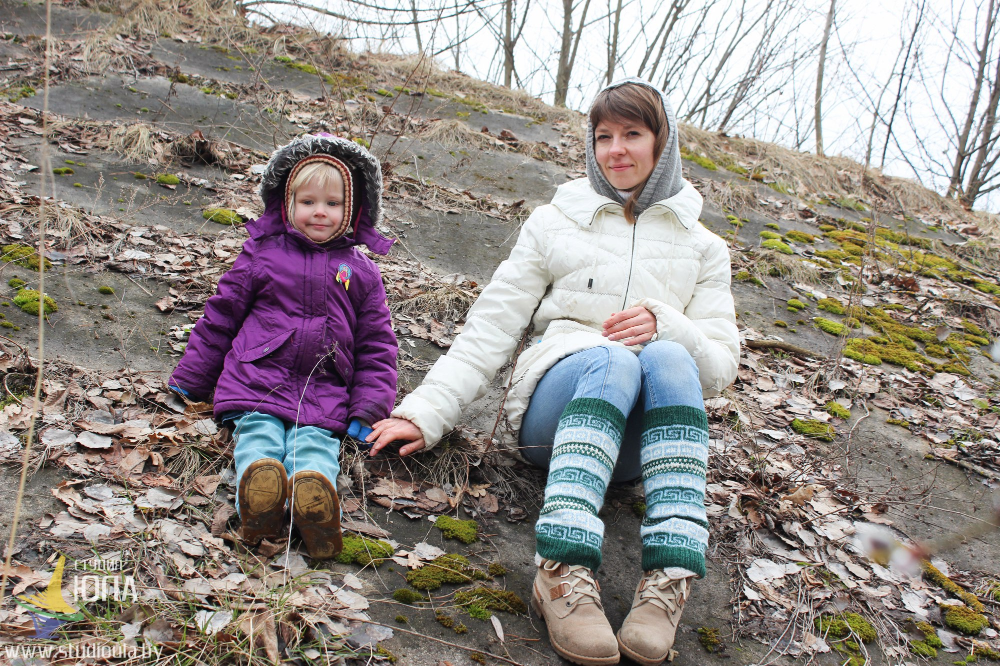
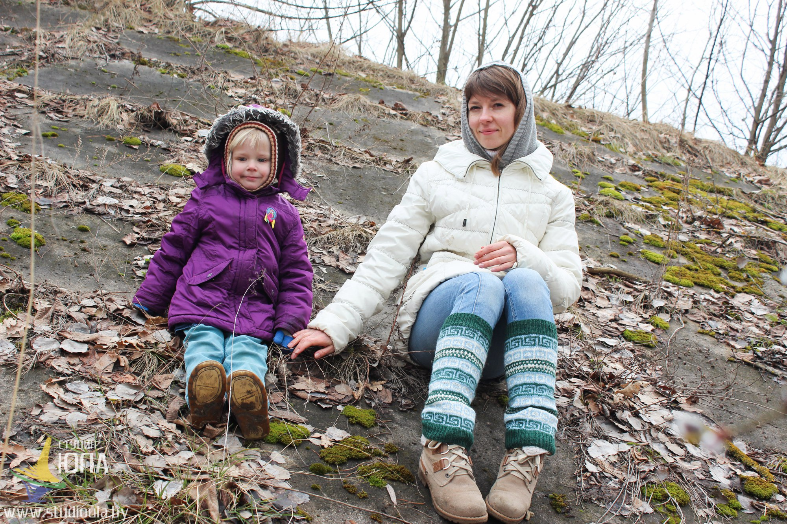
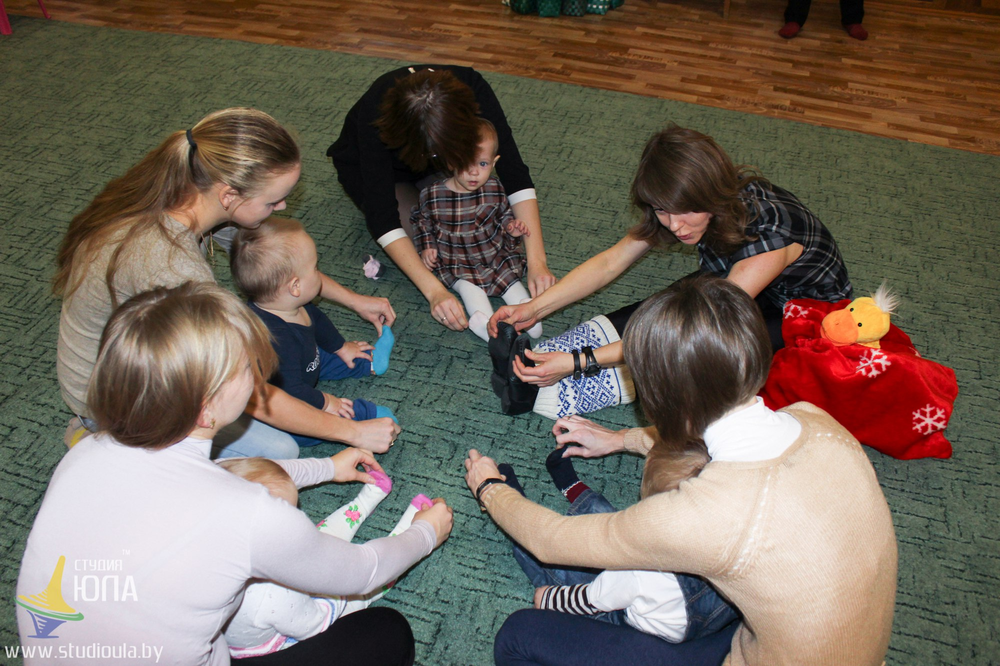
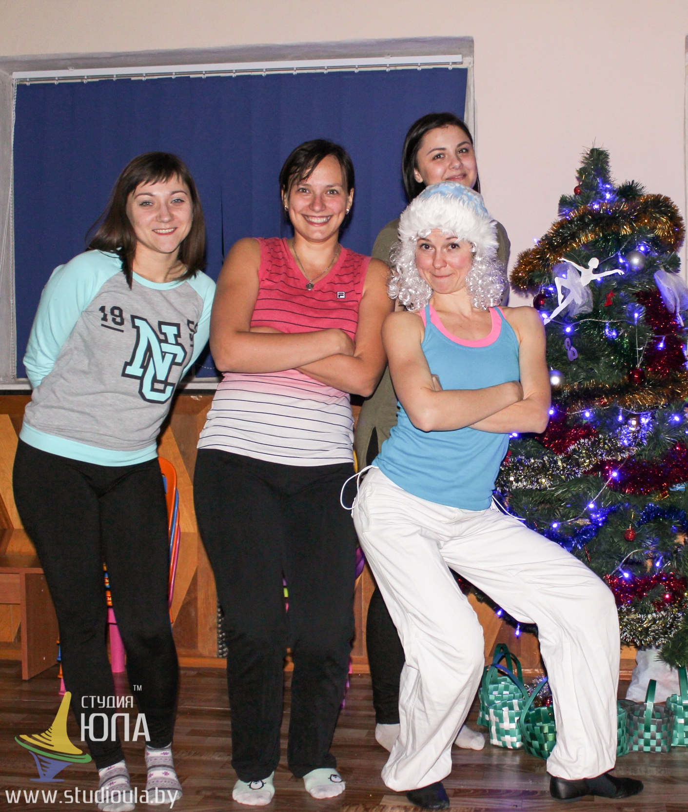
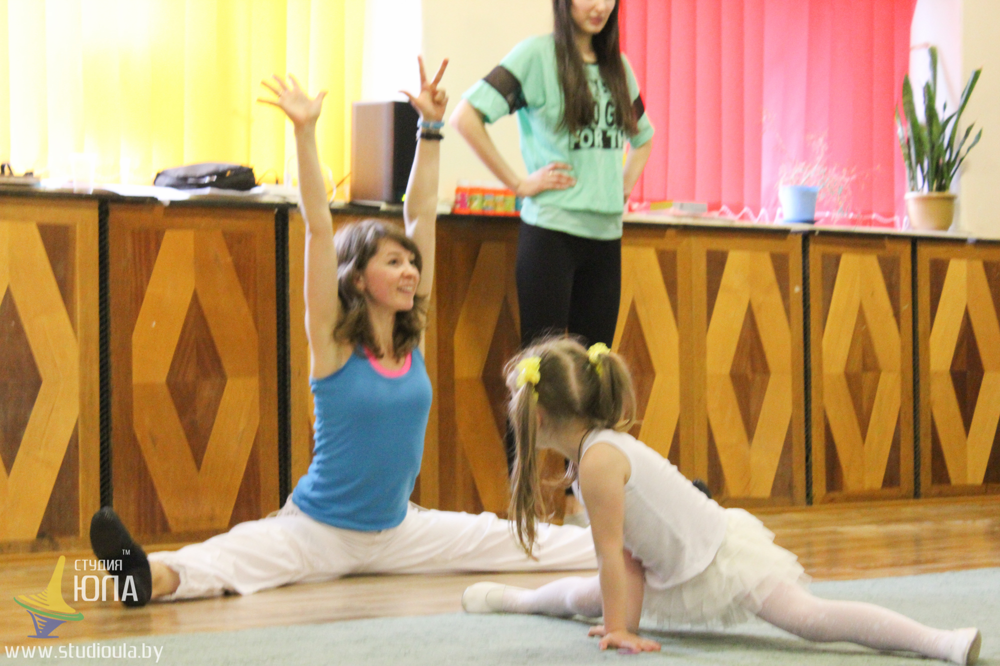
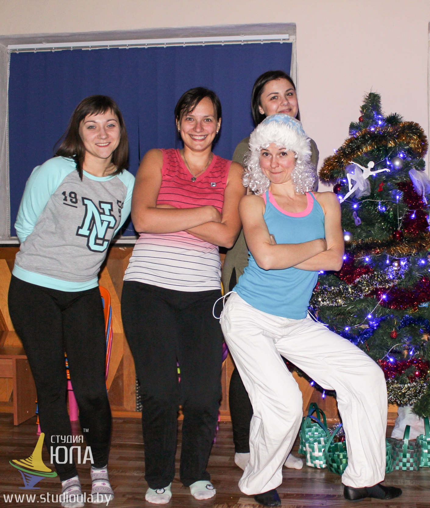
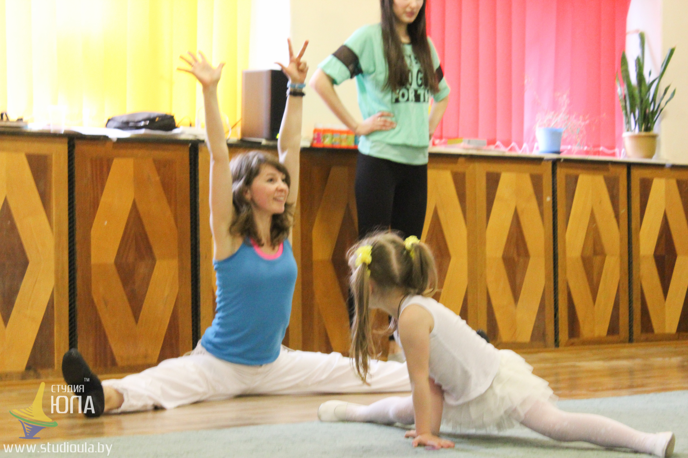

Привет! Меня зовут Юля, мне 28 и я трудоголик...А еще я мама, жена и хозяюшка небольшого частного предприятия. Вот докатилась)
 Это я)

Юля + Тася = мама и дочь
Это я)

Юля + Тася = мама и дочь
 Папа + Тася
Папа + Тася
С наступлением нового года, весны или понедельника, у нас , у людей порой возникает жажда перемен). И меня это не миновало. Решила писать. О чем долго думать не пришлось. Семья и работа у меня очень веселая и без творчества ни денька! Только бы с ума не сойти от такого изобилия))
Есть такая фраза: « Труд спасает нас от трех зол — нужды, скуки и порока.». Так вот, мой труд меня точно спасает - голова, руки, ноги при деле. На сегодняшний день, спустя 7 лет работы моего предприятия, я научилась делать все — строить, ремонтировать, снабжать, продавать, покупать, быть юристом, бухгалтером, копирайтером, фотографом, видеографом и прочее, прочее, прочее. А вообще я инструктор, педагог, и так уж получилось, что еще и психолог. Так сказать, универсальный боец. Работаю с людьми от 10 месяцев до 50 лет. Планирую расширять эти возрастные рамки. Разрабатываю программы и провожу занятия, а именно — развивающие для малышей, фитнес и йогу для беременных, фитнес и йогу для не беременных, хореографию и современный танец для детей от 3 до 12 лет, оздоровительную и лечебную гимнастику для детей, также провожу совместные двигательные тренинги для всей семьи, организовываю праздники. Перечень занятий рассширяю с каждым годом. Экспериментирую, веду нестандартные занятия, и вообще, моя работа не работа, а скорее творчество.

Мои ученики - молодые и способные
 Мои ученики - чуть по-старше и также способные

Мои ученики - старшие и целеустремленные
В работе

Мои ученики - чуть по-старше и также способные

Мои ученики - старшие и целеустремленные
В работе

Есть у меня еще куча всяких хобби - гитара, пианино, шитье, хендмейд, английский язык, путешествия, массаж, плавание, вокал, маркетинг, медитация. Мир большой и интересный, но время такая странная штука, его вечно не хватает.
Так, что буду писать о вечном — детях, отношениях и своей веселой работе с детьми и взрослыми. С юморком, иногда с нравоучениями, позитивом и мотивацией!